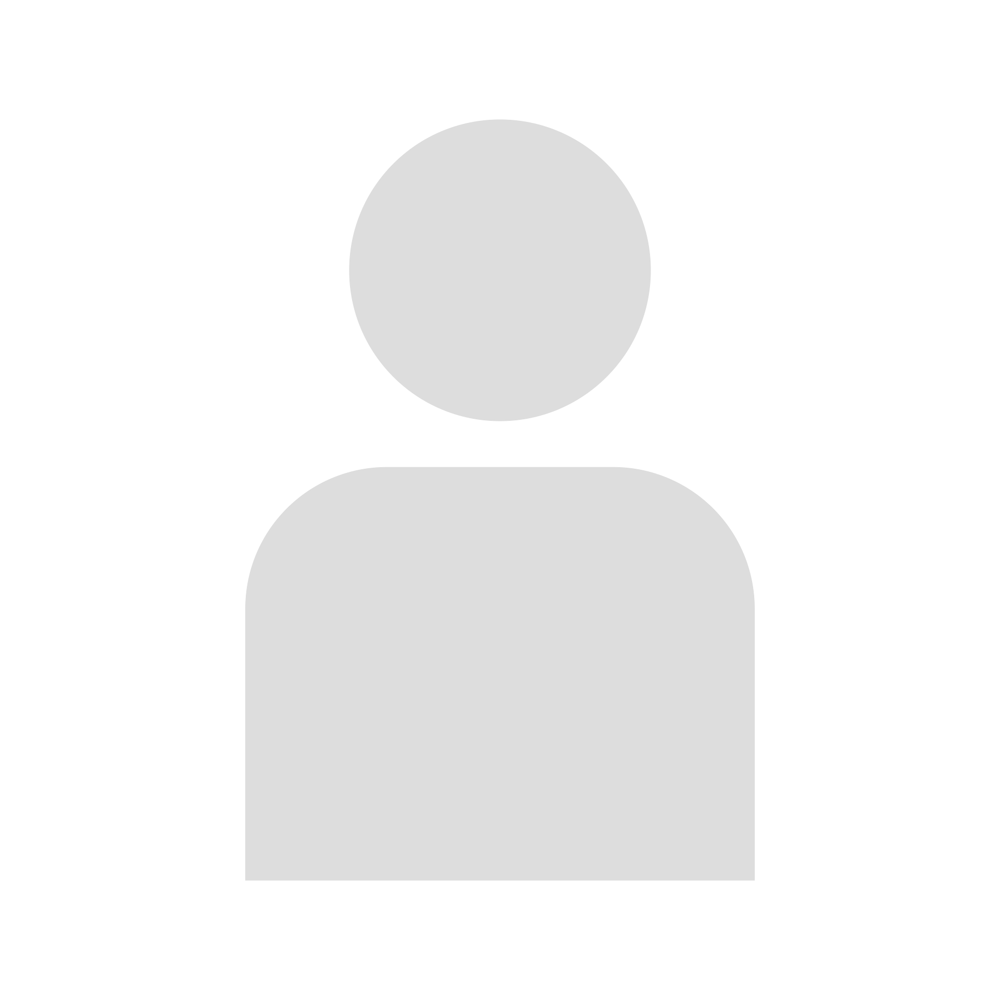

Pertsa Kallio
Videoni puolikuusta
2.11 oli hieno puolikuu. Sain videon otettua kuun ollessa noin 30 asteen korkeudessa, joten näkyvyys oli ihan ok. Eteläisissä osissa näkee hienon rykelmän kraatereita. Pohjoisessa osassa näkyy hyvin Mare Imbrium eli sateiden meri.